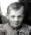
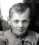

Photographs, stories and memories are all we have of those who have died. Memories are particularly perishable; when I die, my memory, that little bit of their life still living in my brain, will die too. By putting these memories in a less perishable form than my life, they can continue to live in pictures and preserved recollections.
Three limits bound my effort:
- I don't want to present demographic and personal data of the living; such information is the fuel for identity thieft and other fraud. I am relatively cautious, but I cannot assume sufficient caution of other
- Materials: few pictures were taken in past, and even when pictures exist, means of sharing have been limited. Too often I have too few pictures.
- Time.
If you have memories of the same family members (Or others you think need to be included), please share them with me. Tell me if you want to add other family members you cherish memories of.
Walt Bronstad
2825 Forestdale Ave.
Knoxville, TN 37917.
email: gwbronstad@yahoo.com
Mobile Phone: (512) 680-4139


 Alice Tergerson
Alice Tergerson
 Allen Bronstad
Older Allen Bronstad
Allen Bronstad
Older Allen Bronstad
 Alma Tergerson
Alma Tergerson
 Ambrose Embrey
Ambrose Embrey Annie Tergerson
Annie Tergerson
 Bette Bronstad
Bette Bronstad
 Bettie Tergerson.
Bettie Tergerson.


-pinky.jpg)


-pinky.jpg)


.jpg) 
